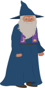
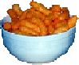
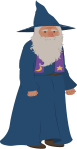
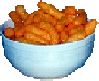

2. Éléments du jeu
le jeu est composé de 2 éléments: les nourritures et les personnages. Les nourritures sont les pommes et les Cheetos et les personnages sont le patient et le médecin.
Patient

Docteur
Pomme

Cheetos
Doctor vs Patient
C’est un jeu à deux joueurs, le docteur et le patient. Des pommes et des Cheetos tombent du ciel et vous devez les manger.
le jeu est composé de 2 éléments: les nourritures et les personnages. Les nourritures sont les pommes et les Cheetos et les personnages sont le patient et le médecin.
Patient
Docteur
Pomme
Cheetos
Au fur et à mesure que les aliments tombent du ciel, vous devez les attraper et les manger. Chaque joueur a un aliment spécifique qu’il doit manger.
Le docteur doit manger les cheetos.
Le patient doit manger les pommes.
Le système de points est assez simple. Lorsque vous mangez votre aliment respectif, vous gagnez un point et vous faites perdre un point à votre adversaire.
Si vous mangez un aliment que vous n’êtes pas censé manger, vous perdez un point; il est donc très important d’éviter la mauvaise nourriture.
Les joueurs peuvent bouger en horizontal seulement, c’est-à-dire à droite et à gauche
Docteur : « A » et « D »
Patient : « flèche gauche » et « flèche droite »
Le premier joueur à 10 points gagne la partie.